Windows · Offline-first · EN / DE / AR
Stock Manager Pro is a professional offline-first inventory manager for repair shops, retail stores and warehouses — matrix stock, IMEI device tracking, a full POS, purchase orders and 14 branded PDF reports, in one Windows app with no server and no subscription.
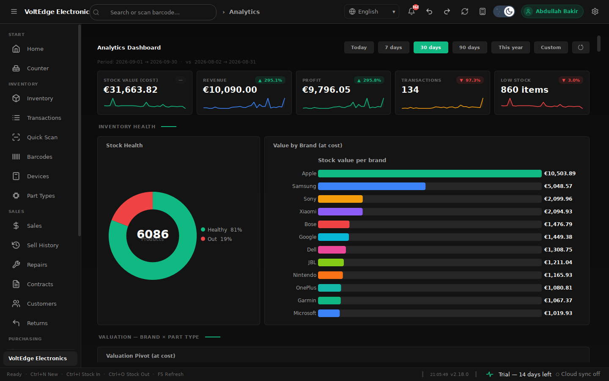
THE TOUR — 01
Today's revenue, profit and sales against yesterday, a 7-day trend, and a ranked list of what needs attention — low stock, devices ready for pickup and repairs waiting — the moment you open the shop.
● Home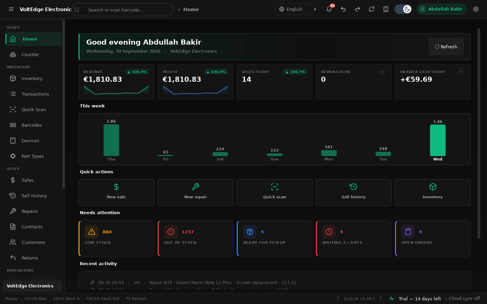
02
Sell, book stock in or out, run a stocktake or process a refund — all behind one scan bar, with a live cart, cash / card / split payment and a part-type chip filter for the busy rush.
● Counter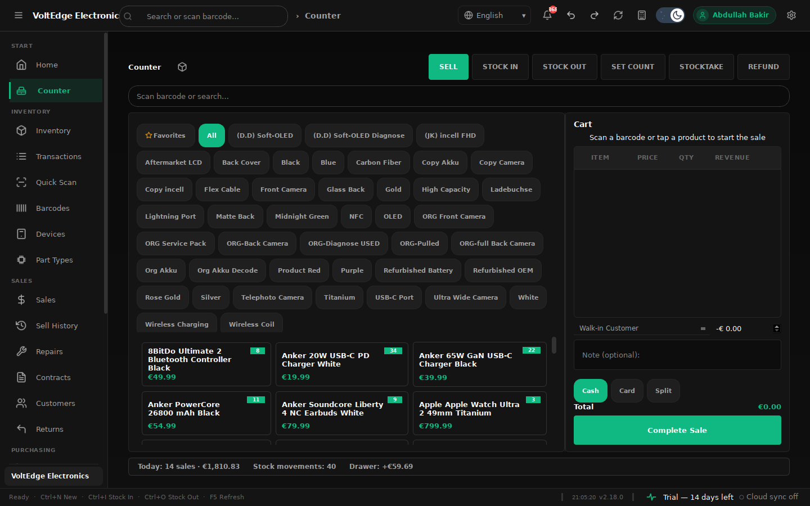
03
A fast, filterable product table with KPI cards for units, low and out-of-stock and total inventory value, status badges, and inline +1 / −1 quick-stock actions — no dialog for the everyday adjustment.
● Inventory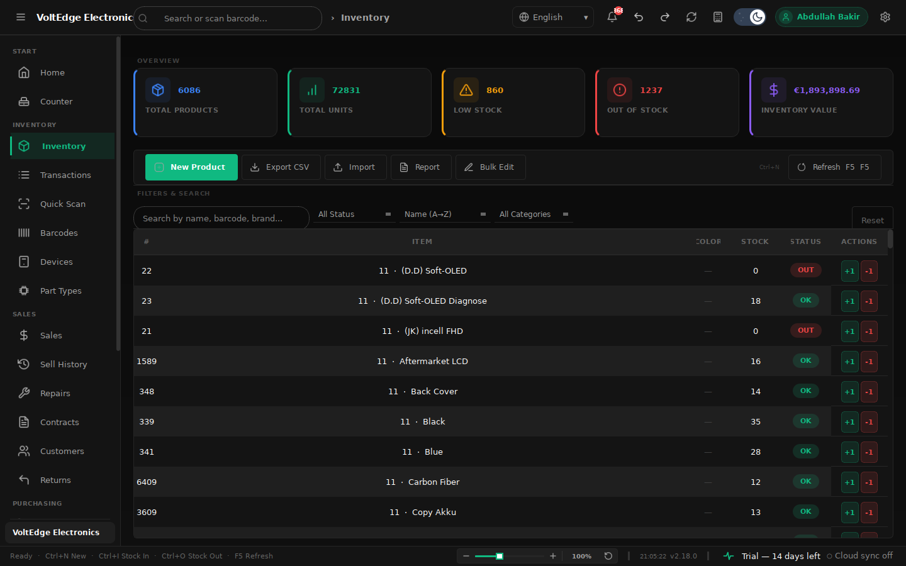
04
Every model × part-type × colour combination, priced and counted, with a frozen model column, per-part-type value totals and instant Low / Out / Reorder filters — the spreadsheet workflow shops already know, minus the spreadsheet.
● Part Types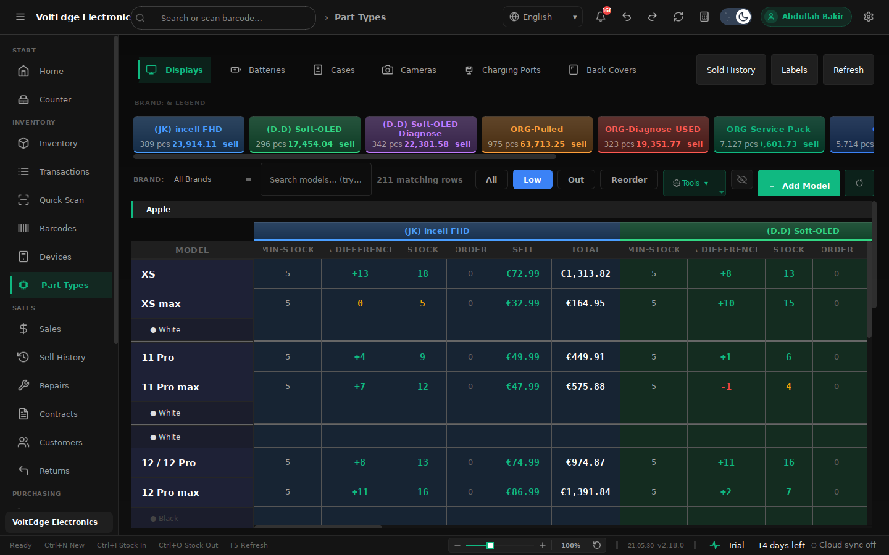
05
Whole-device inventory by IMEI or serial — a brand × model stock grid by storage, KPIs for in stock, sold, average battery and stock value, scan-to-sell, reserve, barcode labels and a full sold history.
● Devices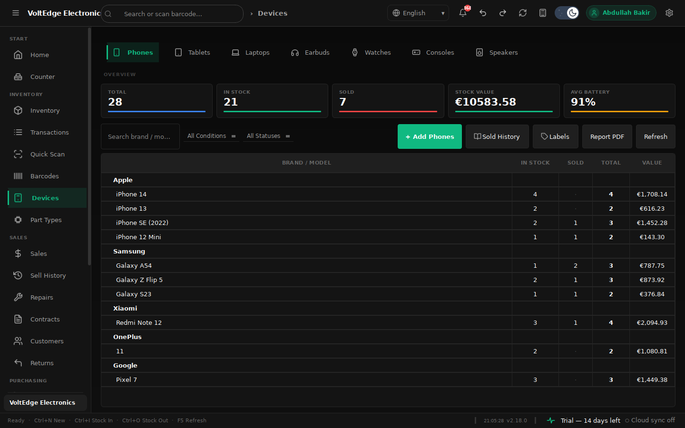
06
Parts consumed at cost, customer deposits collected on intake, and the owner / technician profit split calculated the moment a job closes. No side notebook, no end-of-month guesswork.
● Repairs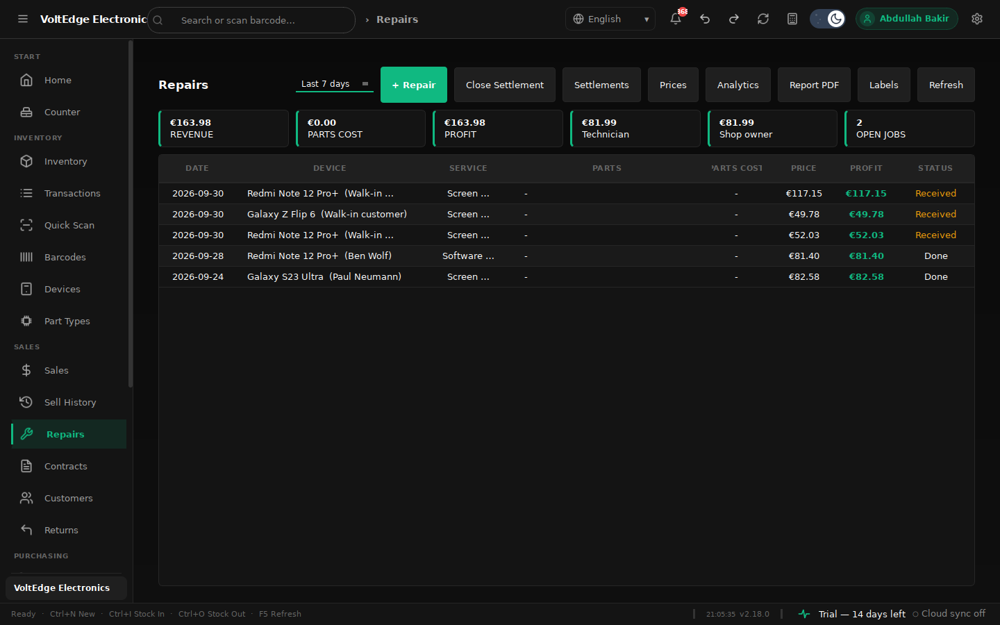
07
Cart-based POS with a product picker, customer lookup and discounts, automatic PDF receipts, and edit / void that reverses stock automatically — the counter and the ledger always agree.
● Sales / POS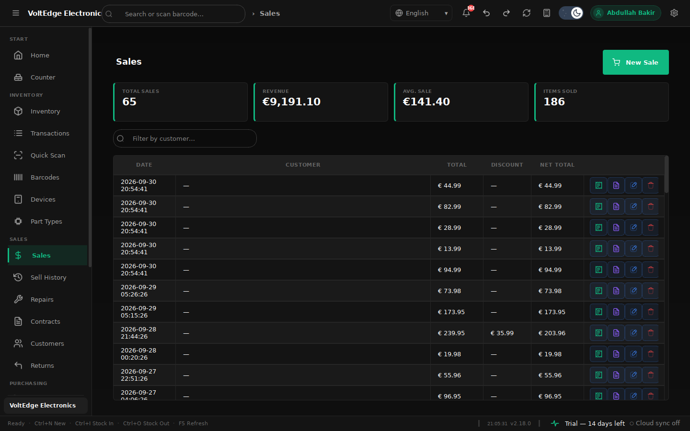
08
Every sale with running profit per line, plus petty-cash in / out entries — and a one-click Close Day report that reconciles the drawer to the cent, cash and card counted separately.
● Sell History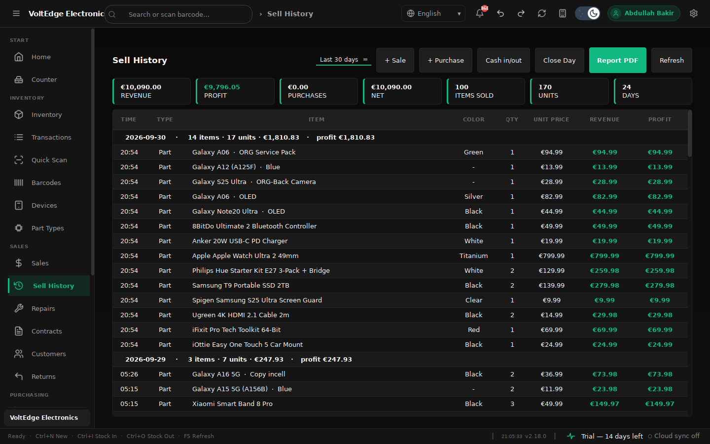
09
A full PO lifecycle from DRAFT through SENT → PARTIAL → RECEIVED that auto stocks-in on receipt, backed by a supplier CRM with cost prices, lead days, ratings and linked inventory items.
● Purchase Orders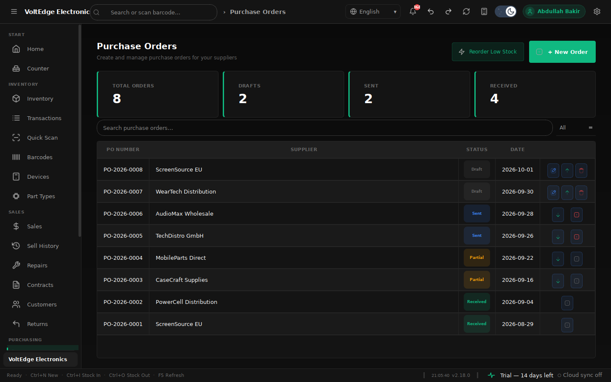
10
Inventory, valuation at cost, low stock, transactions, sales, category performance, audit sheets, phone inventory and sold history, expiring and dead stock and barcode labels — branded PDFs ready to print or send.
● Reports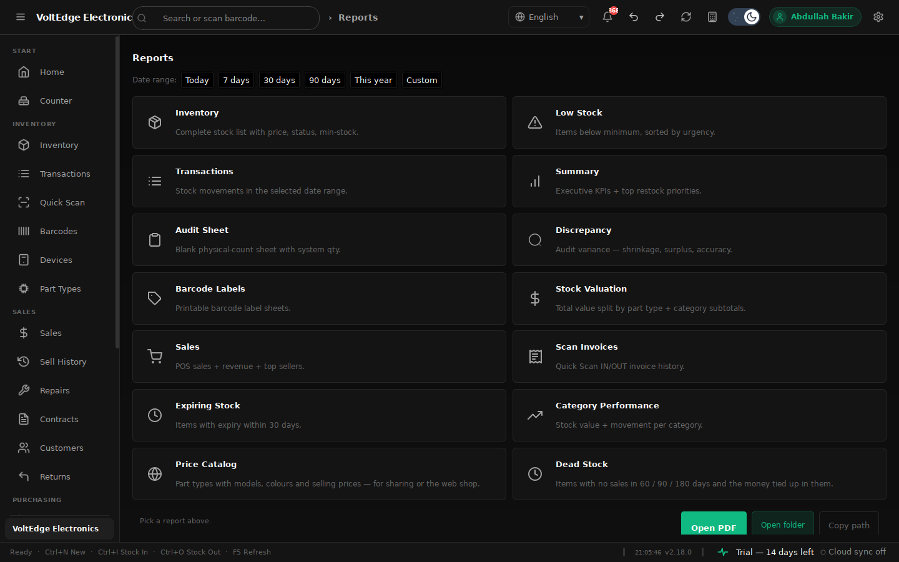
11
Quick Scan intercepts any USB barcode scanner with command barcodes (TAKEOUT / INSERT / CONFIRM) for receiving, selling and stock checks — and the built-in generator prints Code128 / EAN labels for new stock.
● Quick Scan & Barcodes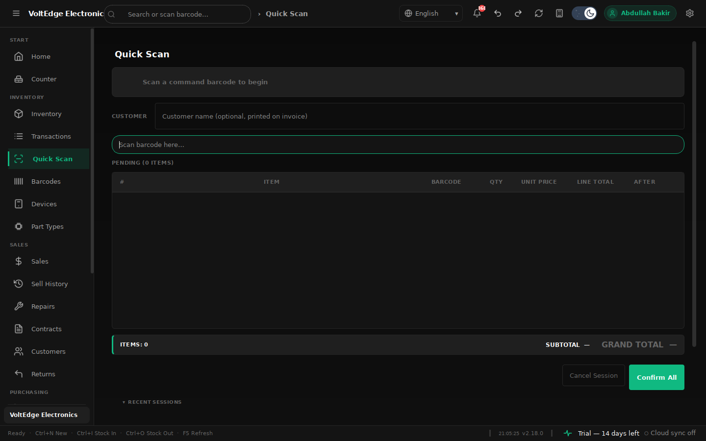
Underneath it all
English, German and Arabic with live switching and full right-to-left layout — not just translated labels.
Dark, Light, Pro Dark and Pro Light. Switch anytime; every screen updates instantly.
Runs on local SQLite with no internet required. Cloud sync across PCs is there when you want it, never required.
Scheduled backups with configurable retention, so a bad afternoon never costs a year of records.
Reverse a stock movement or a status change without digging through logs to fix a mistake.
A tested codebase with an automated release pipeline — updates ship with confidence, not crossed fingers.
Stock Manager Pro is built for repair shops that live and die by their numbers — parts, devices, repairs and cash, all in one place.